Overview
In this tutorial we continue with the import of the camera sequence from CRYENGINE. The camera we import will not have correct orientation. It will be looking downwards. So, in the course of this turoial section, we will use the FBX camera transformation and parent a second camera for re-orientation. Finally, we must also change the FOV and other camera settings to match the CRYENGINE camera view.
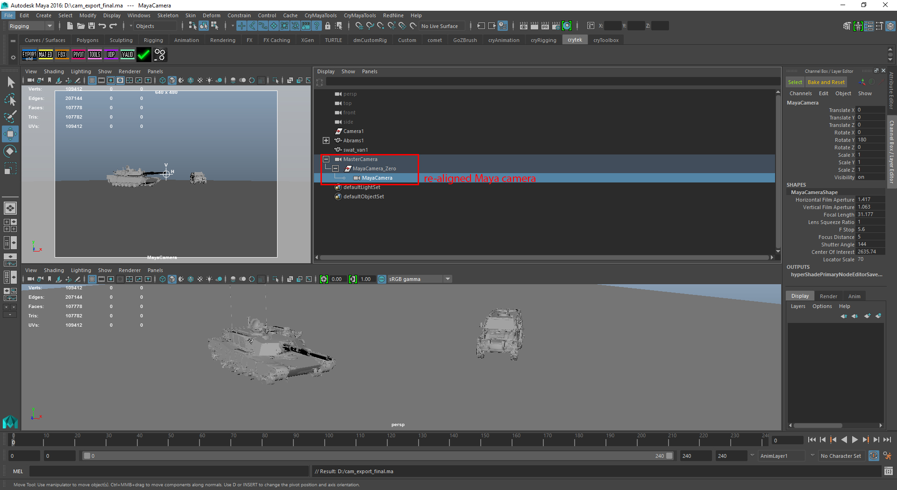
(img00: the finished Maya scene)
Import FBX scene objects and camera
First we need to establish our scene. Please import the two exported FBX files from CRYENGINE which holds the scene objects (a tank and a van if you use our tutorial files) and the camera animation.
- Make sure Maya can read FBX files. In Maya's main menu bar go to Windows -> Settings/Preferences -> Plug-In Manager.
The "fbxmaya.mll" plugin should be checked "Loaded".
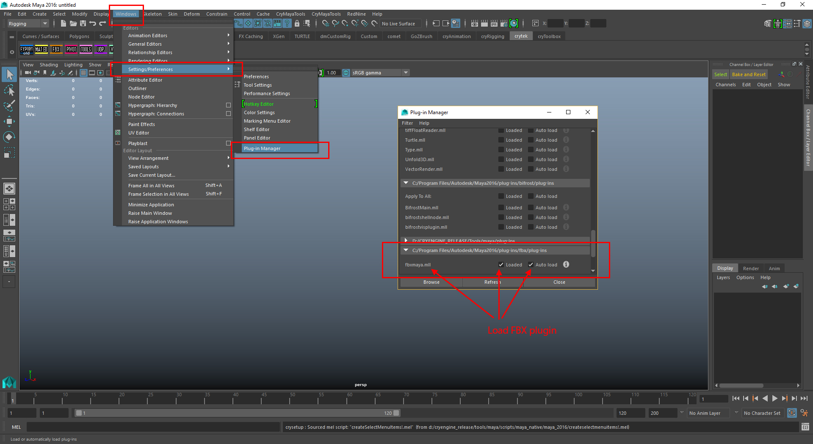
(img01: Loading FBX plugin in Maya)
Import the scene objects: Go to File -> Import in Maya's main menu. Browse to the path of the scene objects and import the FBX file.
Frame the imported objects in your "persp" camera viewport. They are usually not located in Maya's origin.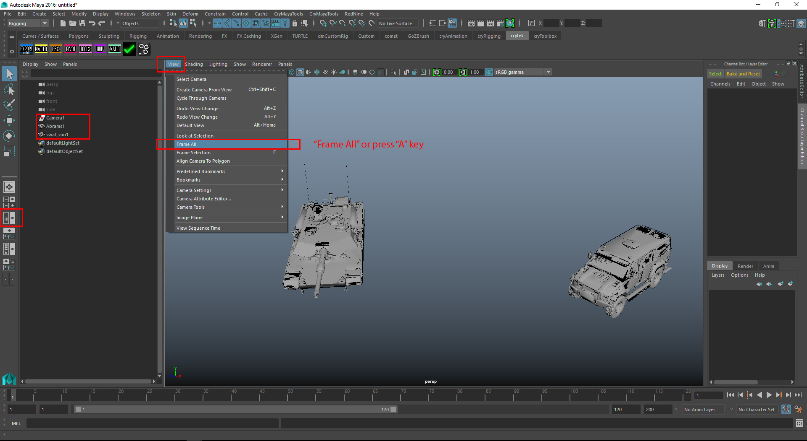
(img01a: imported scene geometries)Geometries are displayed double sided by default in Maya. Go to the "Shape" node of each geometry and change this behaviour to avoid the black and grey shaded polygons on top of each other.
- Go to File -> Import in Maya's main menu. Browse to the path of the camera animation FBX file and import it.
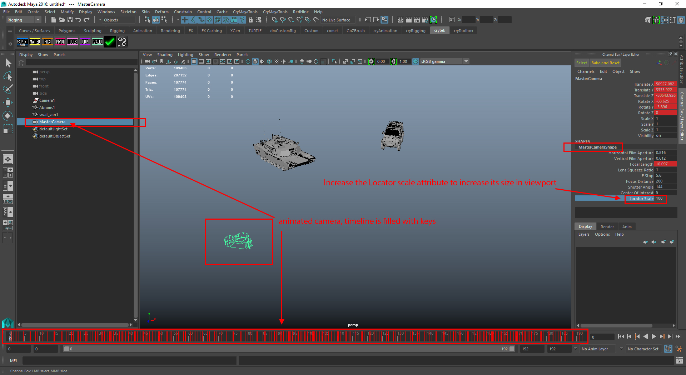
(img01b: MasterCamera node with animation) - You should change from "Film" fps to "NTSC" fps, as CRYENGINE uses 30 fps. See the picture below how it is done.
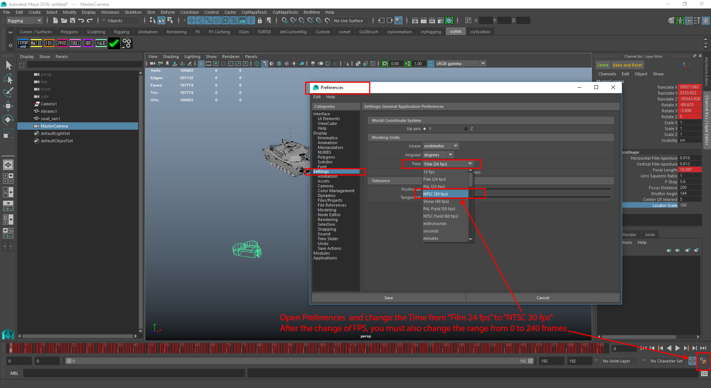
(img01c: NTSC time setting) - Optional: You can create a large polygonal plane object into the scene to have this as replcaement for the CRYENGINE default terrain object. Translate this plane to roughly make contact to the tires of the "SWAT van".
Re-aligning imported FBX camera
The imported camera has incorrect orientation. We have to re-orient it. To achieve this, we attach a new Maya camera node to the imported "MasterCamera" node and add local 90° offset rotation to it.
- Create a new Maya camera from Maya's main menu: Create -> Cameras -> Camera . This is the free camera without an Up and Aim node. Give it the name "MayaCamera".
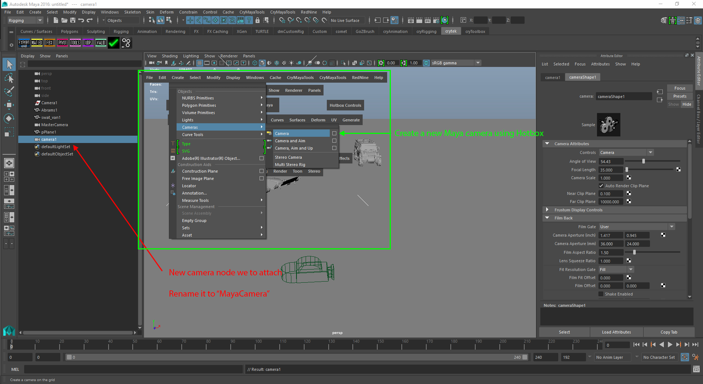
(img02: new Maya camera created) - Zero out the world space transformation data by adding a new group node under the "MasterCamera" object before parenting the child "MayaCamera".
To do so:- Press CTRL - G key and an empty transform/group appears in the Outliner. Rename it to "MayaCamera_Zero".
- MMB -click & drag this group under the "MasterCamera".
- MMB- click & drag the "MayaCamera" under the "MayaCamera_Zero.
To "zero out" the transformation of the "MayaCamera_Zero" group node and "MayaCamera"node, go to ChannelBox and zero the Translate and rotate values. Now you see that the "MayaCamera" and its zero'ed out parent node, are aligned to the CRYENGINE "MasterCamera".
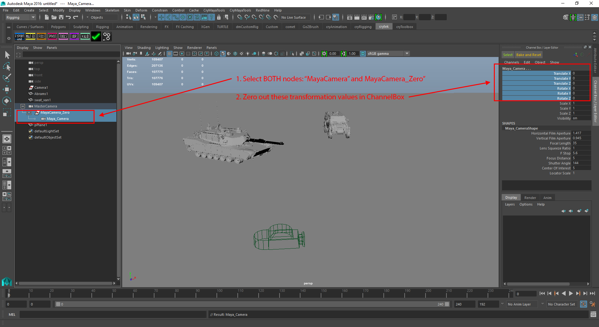
(img03: How to "Zero out" transformation of a child node)Check the Translate/Rotate values of the group and child camera node separately! If you select each one, they must be located right over the "MasterCamera".
Next we will rotate the "MayaCamera" locally.
- We need to switch to a new viewport layout, where we are looking through the "MayaCamera" or you could just switch the active persp view to "MayaCamera":
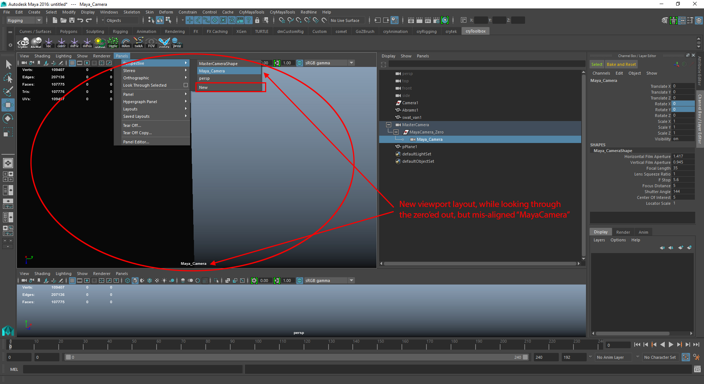
(img04: "MayaCamera") - With offset rotation of 90° in X and Y axis we should have the correct camera aiming towards our tank and SWAT van. Scrub the timeline to check the camera animation. The only thing off is the camera resolution/aspect ratio. This will fixed in the next section.
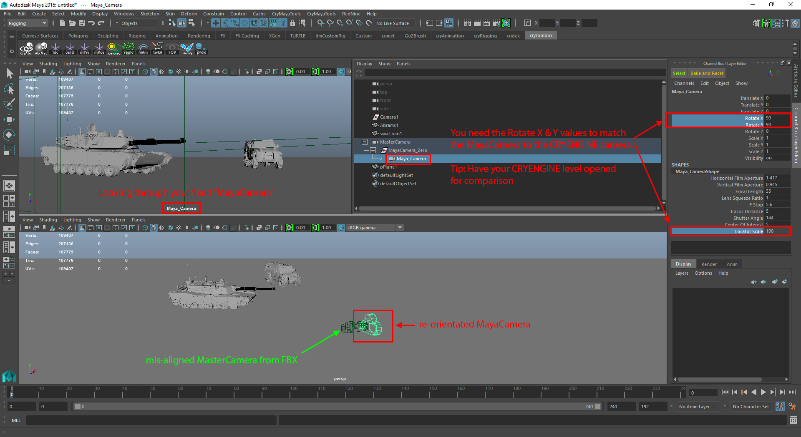
(img05: Fixed camera orientation)
Converting camera FOV
CRYENGINE camera FOVs are vertical FOV. But standard cameras in Maya are using horizontal FOV. You have to convert these values first.
Also, the FOV value from the imported FBX camera ("MasterCamera") is incorrect. Don't use it.
- Please select the "MayaCamera" and open the Attribute Editor. The FOV value there is not what you might expect to set FOV for the MayaCamera.
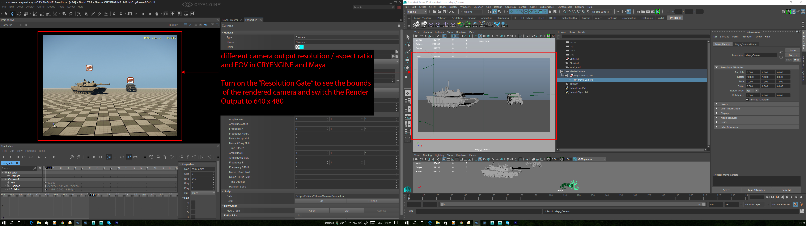
(img06: FOV value of the FBX "MasterCamera" does not match) - You have to convert the 60° vertical FOV to horizontal FOV.
For our case we have used these settings in CRYENGINE:- FOV (vertical): 60°
- 640 x 480 pixels (aspect ratio 4:3)
- 30 fps
FOV conversion maths here:- phi_vertical := vertival FOV angle in degrees, e.g.60°
Hpix := resolution height in pixels, e.g. 480
Wpix := resolution width in pixels, e.g. 640
dist := distance from object to camera lens
( If you only have the aspect ratio,e.g. 1.333, then set Hpix to 1.0 and Wpix to 1.333)
conversion math:
tan(phi_vertical / 2) = Hpix / dist
<=> dist = Hpix / ( 2 * tan(phi_vertical / 2) )
=> phi_horizontal = 2 * atan( Wpix / (2 * dist) ) - For the moment being, please refer to the 3dsMax tutorial section how to convert your vertical FOV value. You may want to re-write the MAXScript function in MEL or Python.
- You still have to change the camera rendering output to 640 x 480. See the screenshot below for the details:
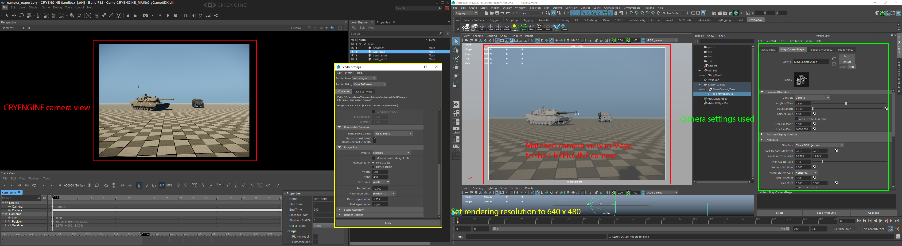
(img07: Matching the CRYENGINE and Maya camera FOV angles)
You may want to output the camera sequence in CRYENGINE for camera matching in Maya. Please refer to the CRYENGINE docs to render your camera sequence with Track View.